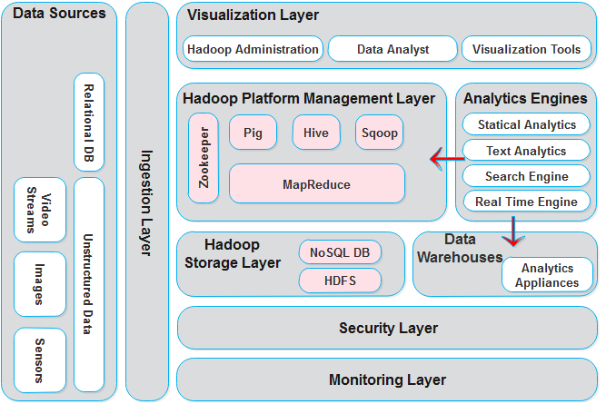

Given the complexities of big data systems, sophisticated big data architecture practices have been a must. The Big Data Architectural Framework (BDAF) is an architecture framework for big data solutions, which aims to help manage a portfolio of distinct artworks and implement a set of specific design elements. The purpose of BDAF is to enforce adherence to a consistent design approach, reduce system complexity, maximize reuse, reduce dependencies and increase productivity.
The Big Data Architectural Framework (BDAF) has four integrated parts: Domain Defined, Platform, Activation Reliance, and Technology Neutral Model. BDAF components are a central model, controlled by the architecture, that forms a coherent architecture for big data processing, including data mining, storage, processing, planning, aggregation, transmission and communication, reporting, visualization, monitoring, flow and automation.
In 2004, Google published a paper on a process called MapReduce that used an architecture like this. The framework for MapReduce provides a parallel programming model and its associated application for processing massive amounts of data. With MapReduce, theses are split and distributed across parallel nodes and processed in parallel (the Map step). The results are then collected and delivered (the Reduce step). The framework was incredibly successful, so some wanted to replicate that algorithm. Therefore, the implementation of the MapReduce framework was adopted by the open source Apache project called Hadoop.
MIKE2.0 is an open approach to information management that addresses the approach to dealing with big data in terms of beneficial modification of data sources, complexity of interrelationships and difficulty in deleting (or modifying) individual records.
